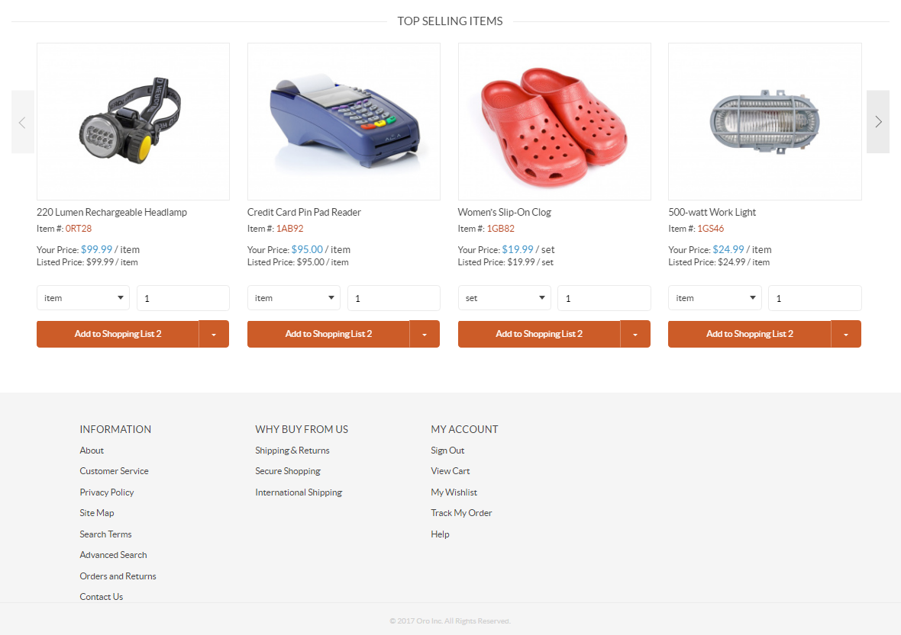

The following guide is intended as an introduction to the OroCommerce default front store. It illustrates how to navigate, browse and interact with the store.
For a quick orientation, see how to Register and Sign in and check out the Navigation Basics.
In the Manage Your Account and Billing and Shipping Addresses topic you will learn:
In the Organize your planned purchases in the Shopping Lists topic you will learn:
In the Submit an Order, Review Your Existing Orders and Order History topic you will learn:
In the Unlock Your Pending Purchases via Request for Quote topic you will learn:
In the Negotiate with the Seller Using Quotes topic you will learn:
In the Manage Users in Your Organization and Control Their Access Level topic you will learn:
In the following topics, you can find answers to the next questions:
Sample Front Store
